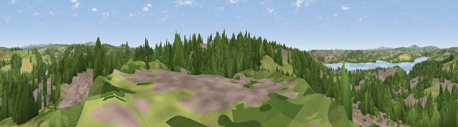

Viewpoint near Saltash
#17537 in England · top 33% of its area beats it · near SaltashWhere it is
The exact computed spot (SX 45525 59625). Click the marker for map links.
The view, rendered

A 360° render of this exact spot computed from the terrain model, tree cover and land cover — summer colours, afternoon light, calibrated against photographs of famous viewpoints. Real trees, hedges and buildings will differ in detail.
The panorama
Grey silhouette: terrain skyline in each direction (720 bearings, Earth curvature and refraction included). Dashed green: skyline with trees (+15 m) and buildings (+8 m) as obstacles. Blue strip: how far the ground is visible on each bearing.
Where the view opens
Wedge length = distance to the farthest visible ground on that bearing (vegetation-aware). Rings at 10, 25 and 50 km.
What fills the view
42% woodland · 26% built-up · 22% grassland · 6% water · 4% cropland ·
Angular shares of the visible panorama (visual magnitude), not map area. Landscape diversity 0.59 (0–1 Shannon).
Key numbers
More beautiful places nearby
The staircase of upgrades: each row has a higher view potential than everything closer. Driving times are estimates from straight-line distance, calibrated against real road routing — check an actual route before setting out.
| Place | Direction | Drive | Score |
|---|---|---|---|
| Viewpoint near Saltash | SW · 1 km | ~3 min | 56.5 |
| Tor Hill | NNE · 1 km | ~4 min | 58.6 |
| Viewpoint near Botus Fleming | W · 4 km | ~9 min | 58.9 |
| Viewpoint near Roborough | NE · 4 km | ~9 min | 61.7 |
| Cumble Tor | W · 7 km | ~14 min | 64.5 |
| Viewpoint near St Mellion | NW · 7 km | ~15 min | 67.3 |
| Viewpoint near Landrake | W · 8 km | ~16 min | 69.4 |
| Viewpoint near Down Thomas | SSE · 9 km | ~18 min | 70.8 |
50.41613, -4.17567 · source: screening · position refined by local search. Computed location — check access rights before visiting.